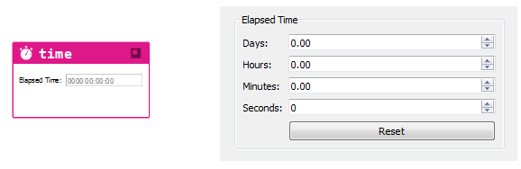

5.1.18. Time Part¶
The time part is used to track the elapsed time since the time is last reset.
Double-clicking on the time part’s frame or right-clicking and selecting “Edit...” opens an editor dialog (see Part Editing, and Undo, Redo Commands) that displays the content shown in Figure 5.18, that allows the elapsed time expressed in the days, hours, minutes, and seconds to be edited or viewed.

Fig. 5.18 The Time part and editor dialog.
Clicking on Part Help opens this page.